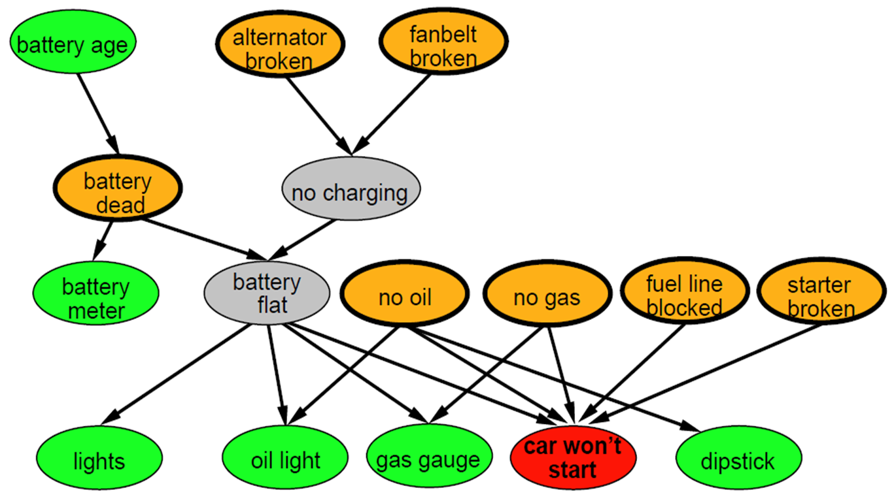

Written
Assignment 5
The assignment should be submitted via Blackboard.
Problem
1
30 points
You
are a meteorologist that places temperature sensors all of the world,
and you set them up so that they automatically e-mail you, each day,
the high temperature for that day. Unfortunately, you have forgotten
whether you placed a certain sensor S in Maine or in the Sahara desert
(but you are sure you placed it in one of those two places) . The
probability that you placed sensor S in Maine is 5%. The probability of
getting a daily high temperature of 80 degrees or more is 20% in Maine
and 90% in Sahara. Assume that probability of a daily high for any day
is conditionally independent of the daily high for the previous day,
given the location of the sensor.
Part
a: If
the first e-mail you got from sensor S indicates a daily high under 80
degrees, what is the probability that the sensor is placed in Maine?
Part
b: If
the first e-mail you got from sensor S indicates a daily high under 80
degrees, what is the probability that the second e-mail also indicates
a daily high under 80 degrees?
Part
c: What
is the probability that the first three e-mails all indicate daily
highs under 80 degrees?

Figure 1: A Bayesian network graph establishing
relations between various car problems and their causes.
Problem 2
10 points.
Suppose that:
- P("alternator broken"=true) = 0.02
- P("no charging"=true | "alternator broken"=true) = 0.95
- P("no charging"=true | "alternator broken"=false) = 0.01.
What is P("no charging"=false)? How is it derived?
Problem 3
10 points.
On the network shown in Figure 1, suppose that:
- P("battery age" <= 3 years) = 0.7
- P("battery dead"=true | "battery age" <= 3 years) =
0.02
- P("battery dead"=true | "battery age" > 3 years) =
0.1.
What is P("battery age" <= 3 years | "battery dead"=true)? How
is it derived?

Figure 2: Yet another Bayesian Network.
Problem 4
30
points.
Part a: On the
network shown in Figure 2, what is the Markovian blanket of node L?
Part
b: On
the network shown in Figure 2, what is P(A, F)? How is it derived?
Part
d: On
the network shown in Figure 2, what is P(M, not(C) | H)? How is it
derived?
Problem 5
20
points.
In
a certain probability problem, we have 11 variables: A, B1,
B2,
..., B10.
- Variable A has 5 values.
- Each of variables B1, ..., B10 have 7
possible values. Each Bi is
conditionally indepedent of all other 9 Bjvariables
(with j != i) given A.
Based
on these facts:
Part
a: How
many numbers do you need to store in the joint distribution table of
these 11 variables?
Part
b: What
is the most space-efficient way (in terms of how many numbers you need
to store) representation for the joint probability distribution of
these 11 variables? How many numbers do you need to store in your
solution? Your answer should work with any variables satisfying the
assumptions stated above.
Other Instructions
- The answers can be typed as a document or handwritten and
scanned.
- Accepted document formats are (.pdf, .doc or
.docx). Please do not submit
.txt files. If you are using OpenOffice or LibreOffice, make sure to
save as .pdf or .doc
- If
you are scanning handwritten documents make sure to scan it at a
minimum of 600dpi and save as a .pdf or .png file.
- If there are multiple files in your submission, zip them
together and submit the .zip file.